Project 2: Fun with Filters and Frequencies
Part 1: Fun with Filters
Part 1.1: Convolutions from Scratch
A 2D convolution slides a flipped filter over an image and, at every position, takes the
sum of the elementwise product between the filter and the overlapping image patch. I implemented
it two ways: a naive version with four nested for-loops (two loops over the output pixel location,
two loops over the filter taps), and a faster version with two nested for-loops (looping over the
output location only, and computing the elementwise product/sum with a single numpy operation over
the patch). Both implementations flip the kernel and zero-pad the input to support full and same output sizes.
Code
def _pad_amounts(K, mode):
if mode == "full":
return K - 1, K - 1
if mode == "same":
s = (K - 1) // 2
return K - 1 - s, s
if mode == "valid":
return 0, 0
def _prepare(img, kernel, mode):
kh, kw = kernel.shape
kflip = kernel[::-1, ::-1] # convolution flips the filter
pt, pb = _pad_amounts(kh, mode)
pl, pr = _pad_amounts(kw, mode)
padded = np.pad(img, ((pt, pb), (pl, pr)), mode="constant", constant_values=0)
oh, ow = padded.shape[0] - kh + 1, padded.shape[1] - kw + 1
return padded, kflip, oh, ow
def conv2d_four_loops(img, kernel, mode="same"):
padded, kf, oh, ow = _prepare(img, kernel, mode)
kh, kw = kf.shape
out = np.zeros((oh, ow))
for i in range(oh):
for j in range(ow):
acc = 0.0
for u in range(kh):
for v in range(kw):
acc += padded[i + u, j + v] * kf[u, v]
out[i, j] = acc
return out
def conv2d_two_loops(img, kernel, mode="same"):
padded, kf, oh, ow = _prepare(img, kernel, mode)
kh, kw = kf.shape
out = np.zeros((oh, ow))
for i in range(oh):
for j in range(ow):
out[i, j] = np.sum(padded[i:i + kh, j:j + kw] * kf)
return out
Verification against scipy.signal.convolve2d
I checked both implementations against scipy.signal.convolve2d(a, k, mode=mode, boundary="fill",
fillvalue=0) on random inputs, for both odd and even sized kernels, and for "full" and "same"
modes. Both my implementations matched scipy to floating point precision (max abs difference on the
order of 1e-14).
Runtime and boundary handling comments
| Filter |
4-loop |
2-loop |
scipy |
| box9x9 |
2.981s (err 1.3e-15) |
0.595s (err 1.1e-15) |
0.0190s |
| Dx |
0.108s (err 0.0e+00) |
0.470s (err 0.0e+00) |
0.0010s |
| Dy |
0.115s (err 0.0e+00) |
0.511s (err 0.0e+00) |
0.0034s |
The four-loop version is dramatically slower than the two-loop version because Python's interpreter
overhead dominates when looping over every single filter tap individually; the two-loop version
replaces the innermost two loops with a single vectorized numpy multiply and sum, which runs in
compiled C. scipy.signal.convolve2d is faster still because the entire convolution
runs in compiled/optimized code with no Python-level looping at all.
For boundary handling, my implementation zero-pads the border,
matching scipy's default boundary="fill", fillvalue=0. This is why both "same"
and "full" outputs from my code matched scipy exactly.
Results: grayscale self-portrait convolved with a 9x9 box filter and finite differences
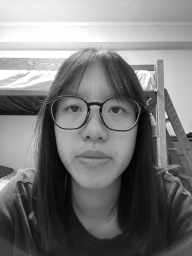
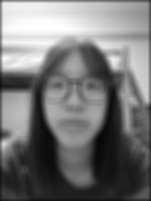
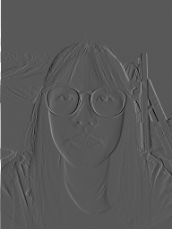
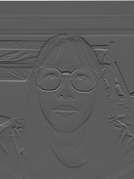
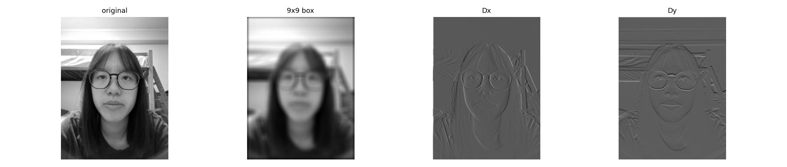
Part 1.2: Finite Difference Operator
I convolved the cameraman image with the finite difference operators
Dx = [1, -1] and Dy = [1, -1]T, then computed the gradient
magnitude image as sqrt(Gx2 + Gy2). To get a binary
edge map I thresholded the gradient magnitude.
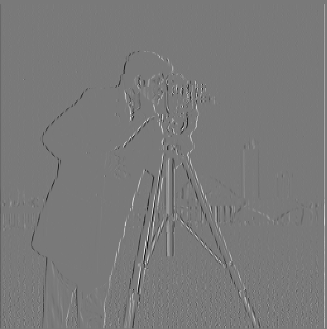
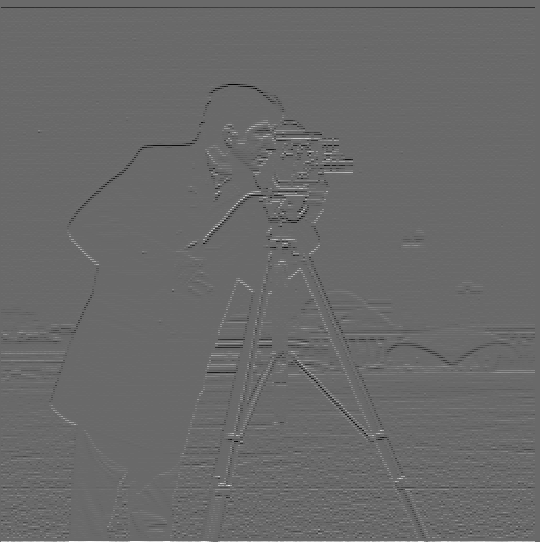
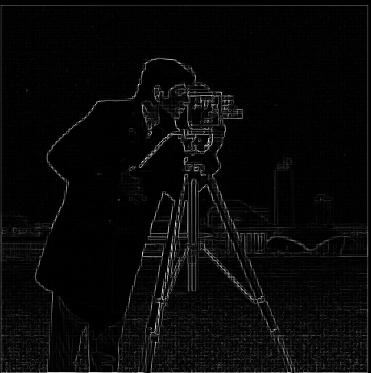
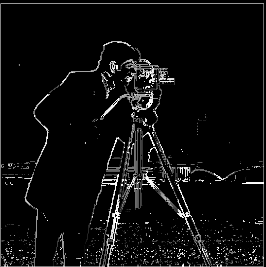
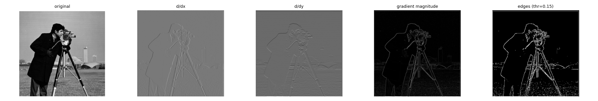
Threshold justification
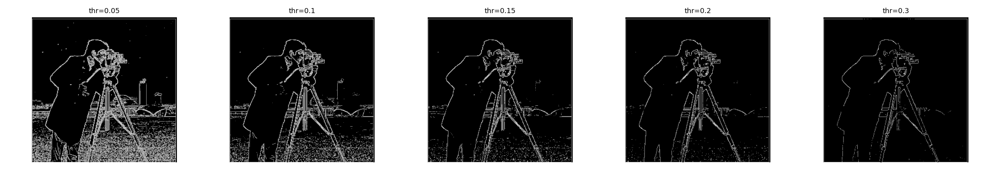
I swept the threshold across [0.05, 0.1, 0.15, 0.2, 0.3] (shown above) and picked
threshold = 0.15 because lower thresholds let through a lot of speckled
noise in flat, low-contrast regions (the grass and background), while higher thresholds start to
break up and erase real edges, like the fine outline of the cameraman's coat and the tripod legs.
This value struck the best balance between suppressing noise and keeping all the real edges
qualitatively visible.
Part 1.3: Derivative of Gaussian (DoG) Filter
The plain finite-difference edges above are noisy because differencing amplifies
high-frequency noise. To fix this I first smoothed the image with a Gaussian filter
(built via cv2.getGaussianKernel and an outer product with its transpose to
get a 2D kernel) before taking the derivative.
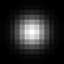
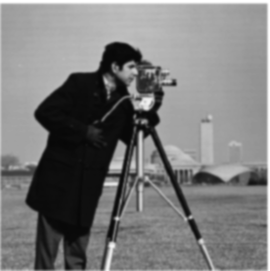
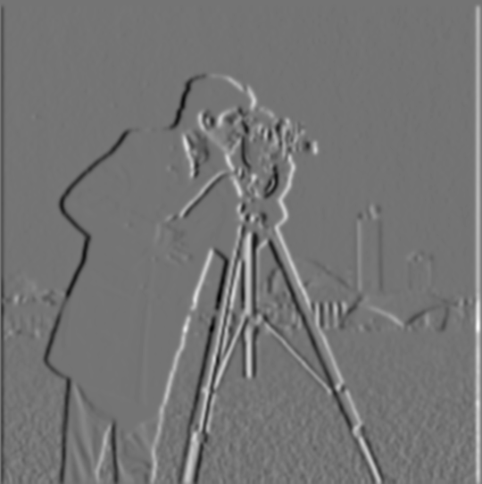
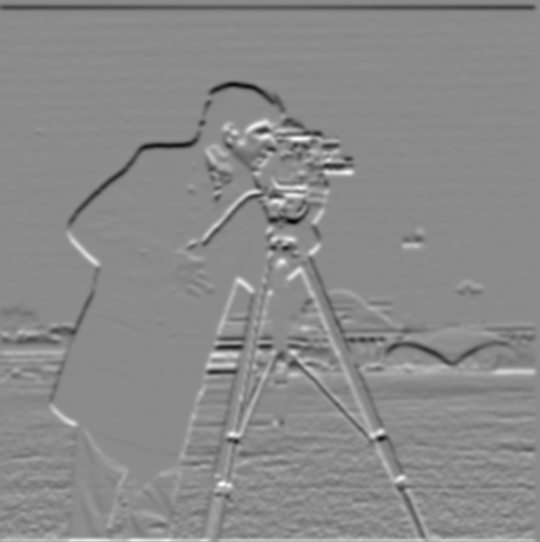
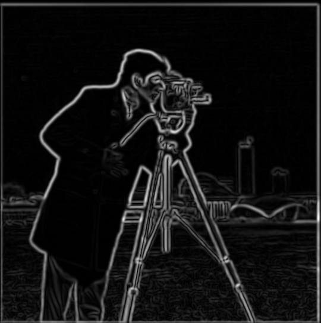
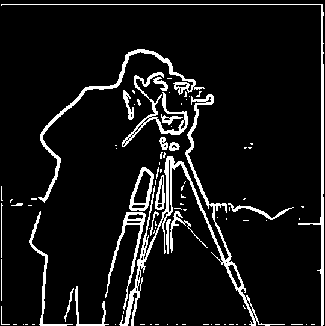
What differences do you see?
Blurring before differentiating removes the grainy noise in flat regions that
plagued the plain finite-difference result in Part 1.2, at the small cost of slightly thicker,
softer edges (fine detail gets smoothed away along with the noise). This let me use a lower,
cleaner threshold (threshold = 0.05) without noise creeping back in.
Single-convolution DoG filters
Instead of blurring then differentiating (two convolutions), I built derivative-of-Gaussian
filters by convolving the Gaussian kernel directly with Dx and Dy (one
convolution total per direction):
G = gauss2d(sigma)
DoGx = signal.convolve2d(G, Dx, mode="full")
DoGy = signal.convolve2d(G, Dy, mode="full")
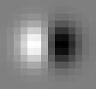
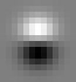


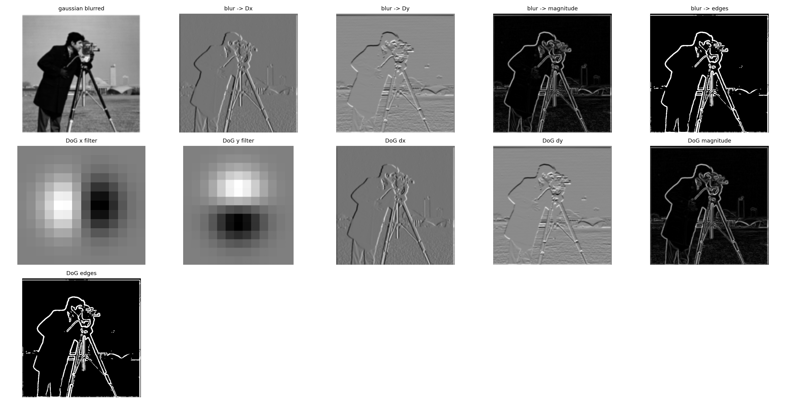
Verification
I verified that convolving with the DoG filters directly gives the same result (up to
boundary effects at the very edge of the image) as blurring then differencing: the maximum
absolute difference between the two gradient-magnitude images, measured away from the border,
was on the order of 1e-15 which is effectively identical, as expected since convolution is
associative: (I * G) * D = I * (G * D).
Part 2: Fun with Frequencies!
Part 2.1: Image "Sharpening"
The Gaussian filter is a low-pass filter, so subtracting a Gaussian-blurred copy of an image
from the original isolates its high frequencies. Unsharp masking adds some extra weight of
those high frequencies back onto the original to make edges and fine detail pop more. This can
be folded into a single convolution using one combined kernel:
def unsharp_kernel(sigma, alpha):
# (1+alpha)*impulse - alpha*Gaussian
G = gauss2d(sigma)
imp = np.zeros_like(G)
imp[G.shape[0]//2, G.shape[1]//2] = 1.0
return (1 + alpha) * imp - alpha * G
I verified that filtering the image with this single kernel gives the same result as computing
image + alpha * (image - blur(image)) directly, to floating point precision.
Taj Mahal

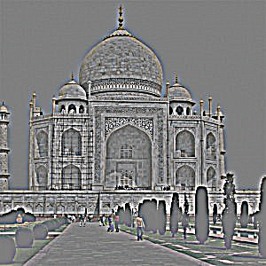
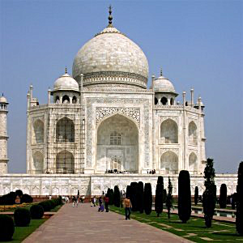
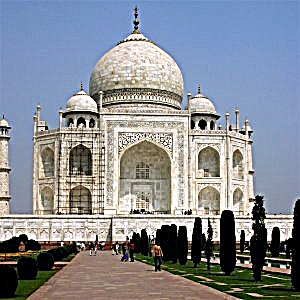
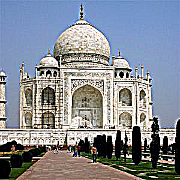
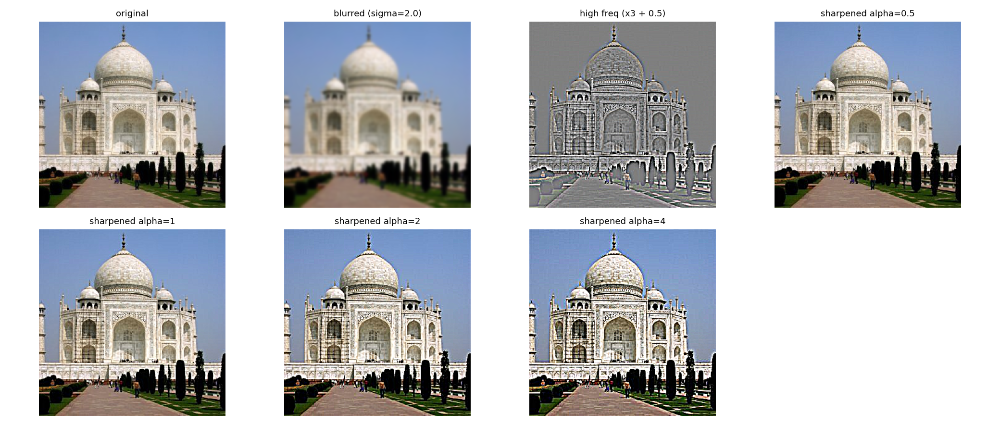
My own image
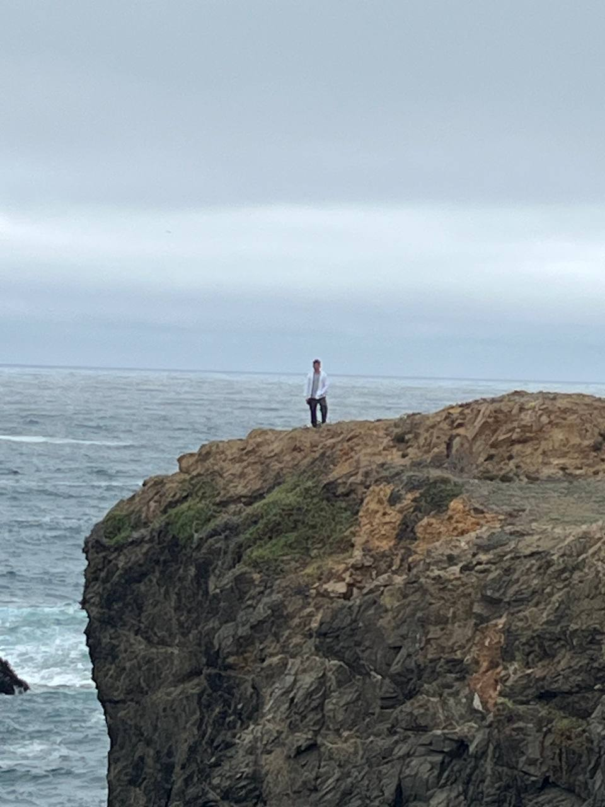
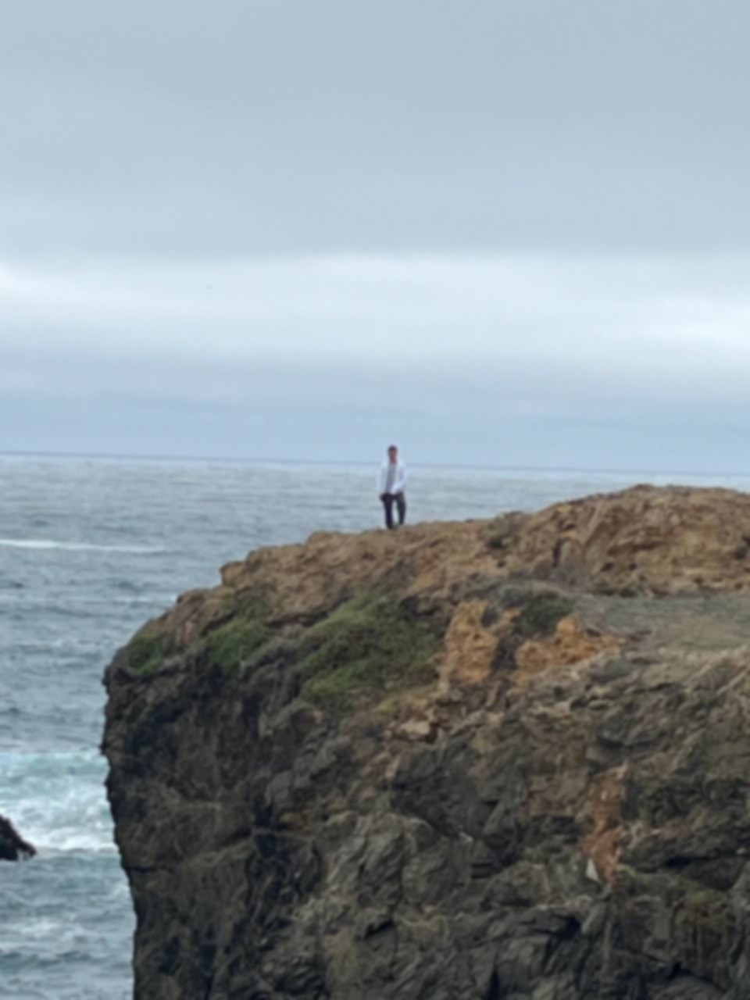
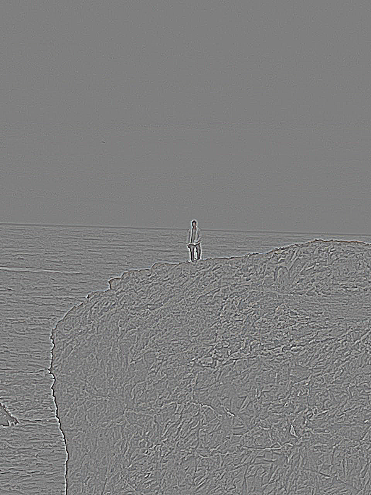
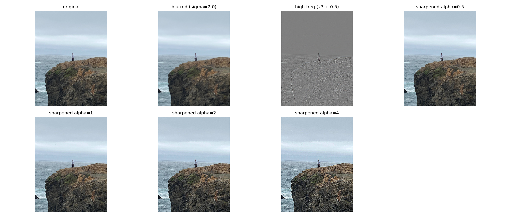
As alpha increases, edges get visibly crisper and more defined, but past a certain point
(alpha > 2) the result starts to show halo artifacts around strong
edges and amplified sensor noise in flat areas, since unsharp masking cannot distinguish real
detail from noise, it boosts the high-frequency content that is present.
Evaluation: blur a sharp image, then re-sharpen it
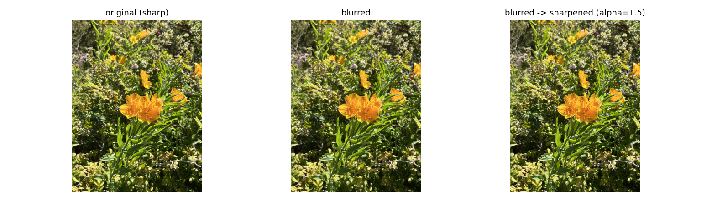
The blurred image had a PSNR of 31.97 dB relative to the original, while the
re-sharpened image reached 36.14 dB. Re-sharpening a blurred image visibly increases
edge contrast and makes it look subjectively crisper, and it raised PSNR back up relative to the untouched blurred version, but it did not recover the
original image: high frequencies removed by blurring are genuinely gone. The Gaussian
low-pass filter is not invertible. So unsharp masking can only exaggerate whatever residual
high-frequency content survived the blur, it cannot reconstruct detail that was
destroyed. The re-sharpened image still looks noticeably softer than the true original when
compared side by side.
Part 2.2: Hybrid Images
Following Oliva, Torralba, and Schyns (SIGGRAPH 2006), I built hybrid images by combining the
low frequencies of one image with the high frequencies of another. The low-pass component
uses a Gaussian blur; the high-pass component is the impulse filter minus a
Gaussian (i.e. image minus its own Gaussian blur). I aligned each pair of images first using
the provided starter alignment code, clicking two corresponding points (e.g. the eyes) on each
image so the two faces/objects are the same scale, rotation, and position before combining.
def make_hybrid(im_low, im_high, sigma_low, sigma_high, color="none"):
def prep(im, keep):
return im if keep else np.stack([to_gray(im)] * 3, axis=-1)
a = prep(im_low, color in ("low", "both"))
b = prep(im_high, color in ("high", "both"))
low = apply_filter(a, gauss2d(sigma_low))
high = b - apply_filter(b, gauss2d(sigma_high)) # impulse - Gaussian
return np.clip(low + high, 0, 1), low, high
Example 1: Derek + Nutmeg
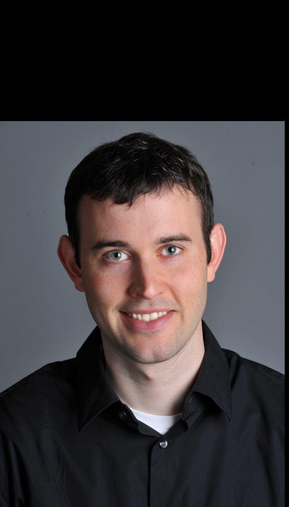
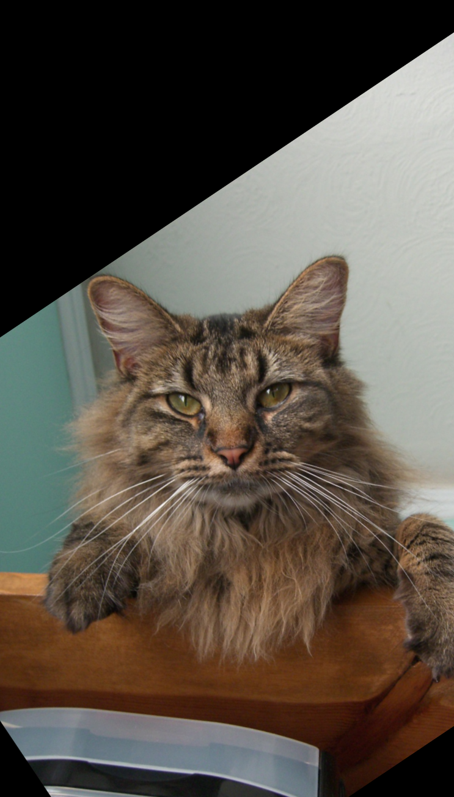
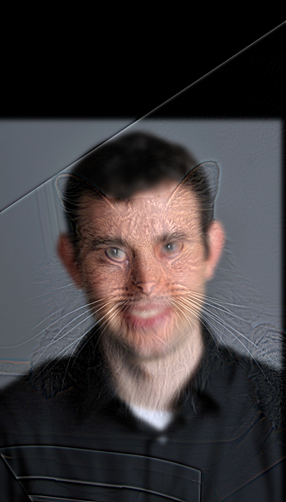
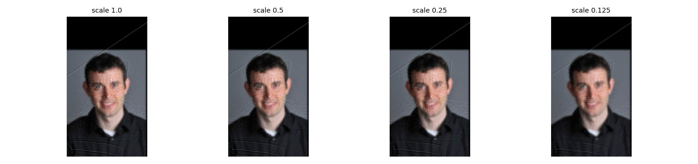
I chose sigma_low = 6 (cutoff around 0.0265 cycles/pixel) for the low-pass filter and
sigma_high = 4 (cutoff around 0.0398 cycles/pixel) for the high-pass filter. Too
small a sigma_low lets too much high-frequency detail from the low-freq image bleed through
and clutter the impression. Likewise, too large a sigma_high leaves too little detail from
the high-freq image visible up close.
Example 2 (full process shown)

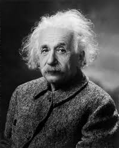
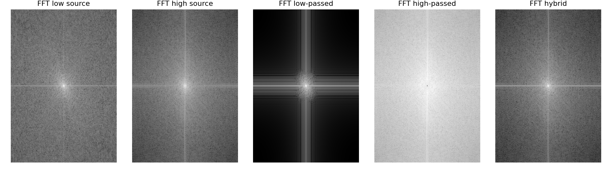
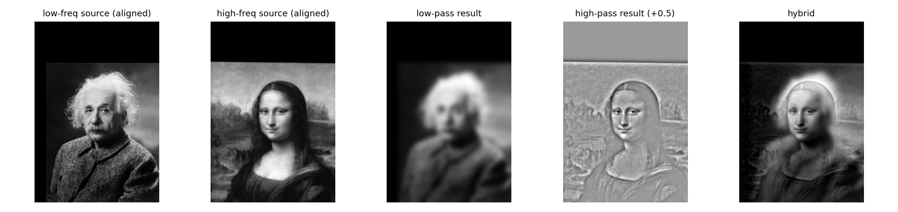
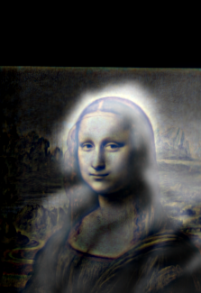
Example 3
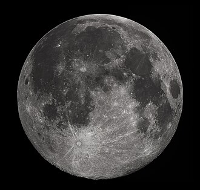
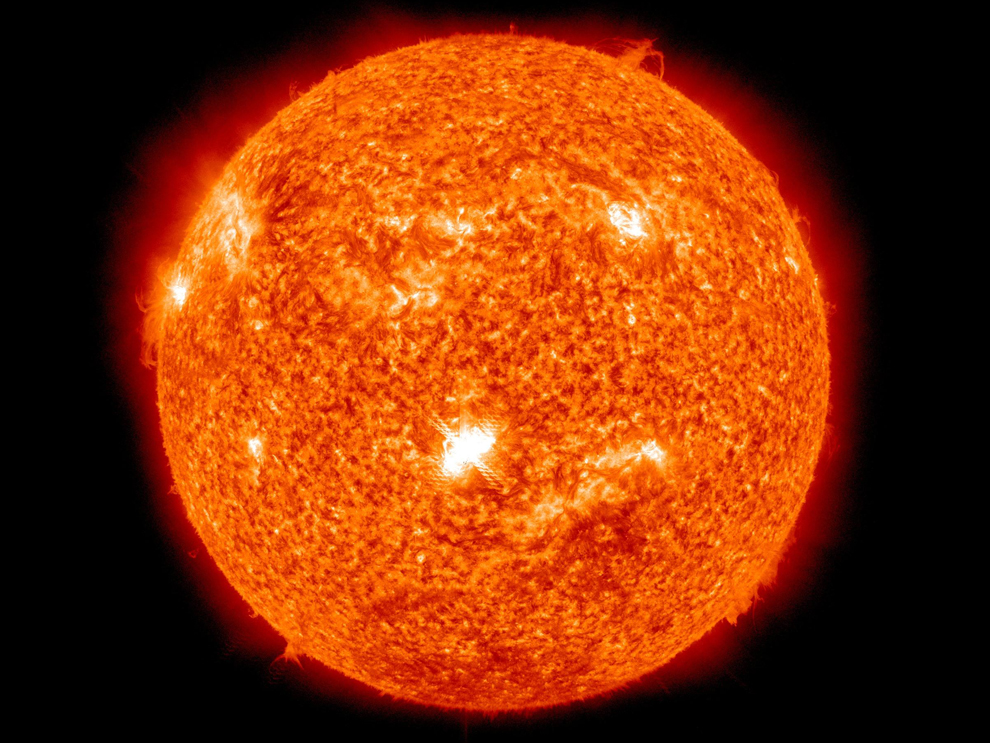
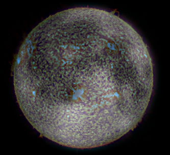
Part 2.3: Gaussian and Laplacian Stacks
A stack behaves like a pyramid but is NOT downsampled. Every level stays at the
original resolution. To build the Gaussian stack I repeatedly blurred the previous level with
a Gaussian filter, doubling sigma at each level so it mimics the effective blur of a pyramid
that would have halved its resolution at every step. The Laplacian stack is the differences
between consecutive Gaussian stack levels, with the final (coarsest) level kept as is so that
summing the whole Laplacian stack exactly reconstructs the original image.
def gaussian_stack(im, levels, sigma0):
st = [im]
for k in range(1, levels):
st.append(apply_filter(st[-1], gauss2d(sigma0 * 2 ** (k - 1))))
return st
def laplacian_stack(gs):
return [gs[i] - gs[i + 1] for i in range(len(gs) - 1)] + [gs[-1]]
Apple
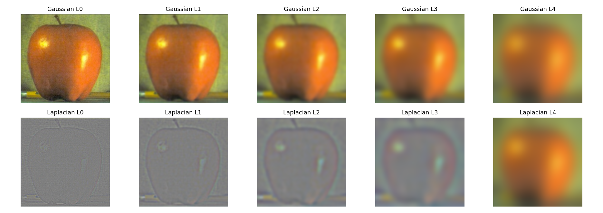
Orange
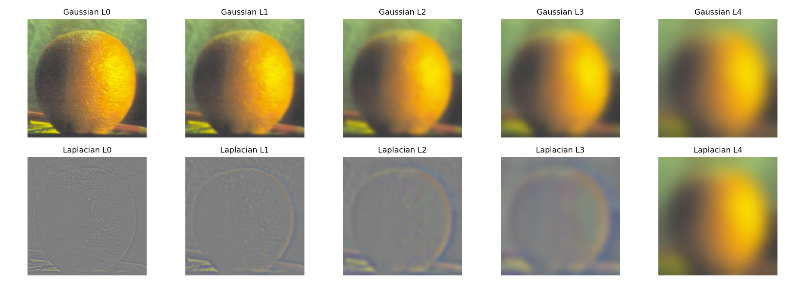
Recreating Figure 3.42
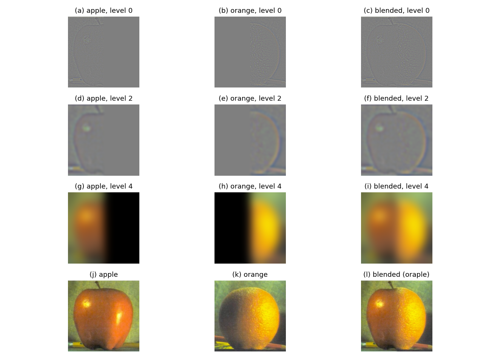
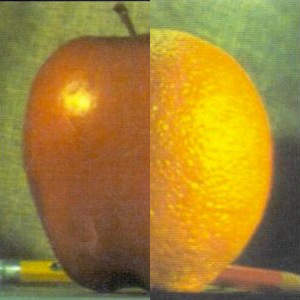
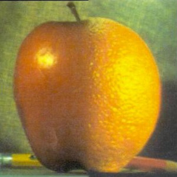
The naive hard splice above shows a harsh and artificial seam down the middle. Whereas
the multiresolution blended oraple shows a smooth, gradual transition. Because each
frequency band was blended with its own appropriately blurred version of the mask, so
low-frequency (color/shading) content blends over a wide region while high-frequency (texture/
edge) content blends over a narrow region right at the seam.
Part 2.4: Multiresolution Blending (oraple)
I followed the algorithm on page 230 of the Burt & Adelson paper exactly: build Laplacian
stacks LA, LB for the two images, build a Gaussian stack GR for the region/mask image, then
combine each level as LS = GR·LA + (1-GR)·LB, and sum every level of LS to get the
final blended result. The mask itself is a step function (all 1s on one side, all 0s on the
other) matching the size of the input images for the straight vertical/horizontal seam case.
def blend(a, b, mask, levels, sigma0):
la = laplacian_stack(gaussian_stack(a, levels, sigma0))
lb = laplacian_stack(gaussian_stack(b, levels, sigma0))
gm = gaussian_stack(mask, levels, sigma0)
parts = [la[i] * gm[i] + lb[i] * (1 - gm[i]) for i in range(levels)]
return np.clip(sum(parts), 0, 1), la, lb, gm, parts
The oraple (vertical seam)
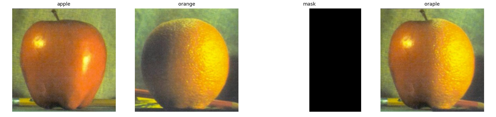
Custom blend 1 (Sun & Moon)


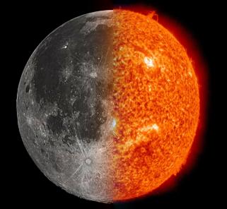
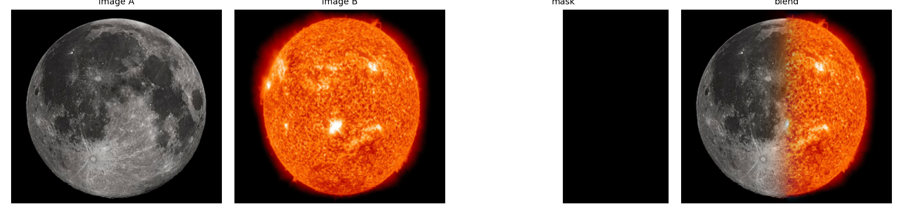
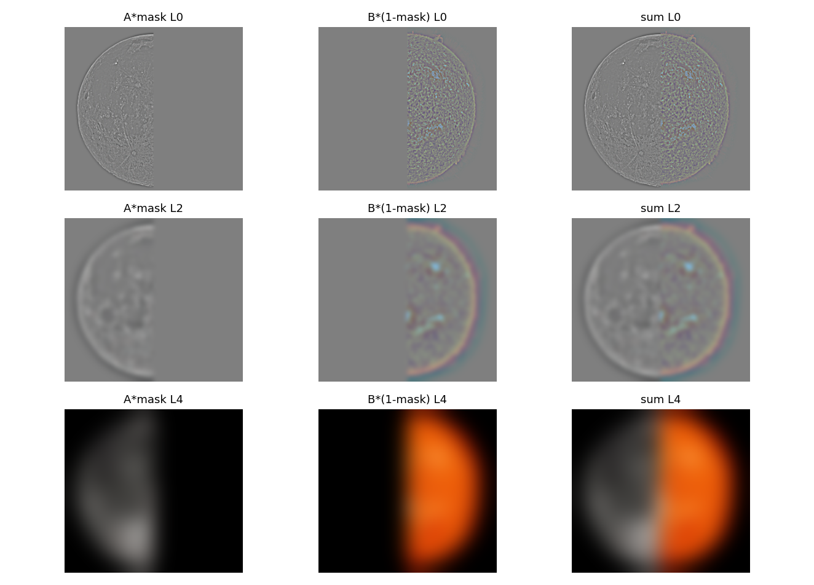
Custom blend 2 (irregular mask, Albert Einstein Young & Old)
For this blend I used an irregular, elliptical mask rather than a straight seam, similar to
Figure 8 in the Burt & Adelson paper, to embed one image inside a region of the other rather
than splicing them side by side.
What I learned
I learnt how frequency handling and filtering can be used to manipulate images in a variety of ways, from edge detection to sharpening and blending.
The Gaussian and Laplacian stacks provide a powerful framework for multiresolution analysis, allowing for smooth transitions between images.
The concept of multiresolution decomposition connects blurring, sharpening, hybrid images, and multiresolution blending as
different applications of the same concept.
Back to Portfolio